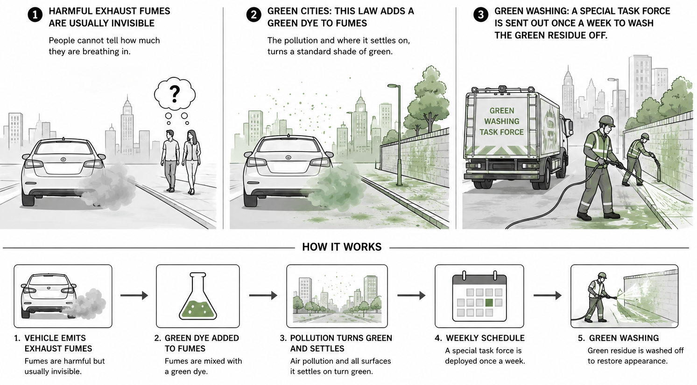

Explanatory memorandum
A significant proportion of harmful exhaust and fume emissions (whether industrial, energy-, or mobility-related) remain below the threshold of unaided human perception. In the absence of a perceptible signal, the citizens are unable to undertake an accurate subjective assessment of cumulative exposure to such pollutants. This information asymmetry between the emission and the exposed natural person constitutes a persistent obstacle to the proper functioning of the internal market in clean air.
This Directive establishes a mandatory chromatic indexation regime, under which any emission stream proven to contain substances harmful to the general population, to plant or animal life, or to any other natural inhabitants of the affected area, shall be supplemented with a standardised coloring additive rendering the emission, and its residue, fully perceptible to the unaided eye.
In coherence with, and so as to operationalise the ambitions of, the ongoing green-city movement, the chromatic specification of the additive shall be strictly harmonised across the Union. The prescribed hue shall correspond to a single binding nature-green reference value [paint/RAL standard to be specified by implementing act], thereby ensuring visual consistency irrespective of Member State, source sector, or substance.
The Directive further establishes a dedicated Remediation Task Force [designation to be determined], whose mandate is the operational management of the periodic removal of the deposited coloured substances from the affected surfaces and habitats. This remediation cycle (hereinafter green washing) shall be conducted on a monthly basis according to a harmonised Union calendar.
The approach thereby reconciles three mutually reinforcing Union priorities: a green colour, applied at standardised reference value; the visible advancement of green cities, in which the emissions are rendered chromatically coherent with the surrounding urban-greening agenda; and a recurring, schedulable, and fully auditable programme of green washing.
In simple English
Harmful exhaust fumes are usually invisible, so people cannot tell how much they are breathing in.
Green cities: this law adds a green dye to fumes, so the pollution and where it settles on, turns a standard shade of green.
Green washing: a special task force is then sent out once a month to wash the green residue off.

You may have noticed the satire by now. Still, the cognitive science is real: whether we can see a hazard genuinely changes how dangerous we judge it to be. Currently, we produce many "invisible" byproducts that have an ill-effect on our environment and even on ourselves (microplastics, pollution, CO2).
Scientific basis
The principal pollutants in exhaust and combustion fumes — fine particulate matter (PM2.5), ultrafine particles, nitrogen dioxide (NO₂), carbon monoxide, and a range of volatile organic compounds — are at ambient concentrations effectively imperceptible: colourless, or so diffuse as to fall below the limits of human vision. This imperceptibility is not incidental to the public-health problem; it is central to it. A consistent finding across the risk-perception literature is that hazards which cannot be directly sensed are systematically underweighted in lay judgement, and that perceptibility, dread, and familiarity — rather than measured probability of harm — dominate how people rank risks (Slovic, 1987).
Two mechanisms are particularly well characterised. First, the availability heuristic: people estimate the frequency or likelihood of an event by the ease with which instances can be brought to mind, so that a hazard which is hard to picture is judged less probable than one that is vivid and readily imagined (Tversky & Kahneman, 1973). Second, construal-level theory holds that events which are psychologically distant — temporally, spatially, or perceptually — are represented more abstractly and weighted less heavily in decision-making than those rendered concrete and proximate (Trope & Liberman, 2010). Air pollution scores poorly on every one of these dimensions: it is invisible, its harms are statistical and delayed, and it is easily construed as someone else's problem, somewhere else, at some later time (Spence, Poortinga & Pidgeon, 2012).
Crucially, the relationship runs the other way as well: making a hazard perceptible alters how it is judged. Qualitative work on public understandings of air pollution shows that people anchor their sense of risk to visible and olfactory cues — smoke, haze, traffic — and discount what they cannot see, such that the perceived geography of pollution tracks its visible signs rather than its measured concentrations (Bickerstaff & Walker, 2001). Judgements of risk and benefit are further governed by an affect heuristic, whereby the immediate feeling evoked by a stimulus — and visual salience is a powerful driver of such feeling — substitutes for slower analytic assessment (Finucane et al., 2000).
The policy-relevant implication, well established in this literature, is that visualisation is not a neutral act of disclosure. Rendering an invisible hazard visible changes its construal, its felt proximity, and the behaviour it elicits. The same mechanism that could be used to make pollution salient and so prompt mitigation can equally be inverted: a hazard made visible in a reassuring form — coloured to read as natural, and seen to be tidied away on a schedule — recruits exactly these cognitive shortcuts to manufacture a sense of control while leaving the underlying emission untouched. That inversion is the entire substance of this Directive.
References
- Slovic, P. Perception of risk. Science 236(4799), 280–285 (1987).
- Tversky, A. & Kahneman, D. Availability: A heuristic for judging frequency and probability. Cognitive Psychology 5(2), 207–232 (1973).
- Trope, Y. & Liberman, N. Construal-level theory of psychological distance. Psychological Review 117(2), 440–463 (2010).
- Spence, A., Poortinga, W. & Pidgeon, N. The psychological distance of climate change. Risk Analysis 32(6), 957–972 (2012).
- Bickerstaff, K. & Walker, G. Public understandings of air pollution: the 'localisation' of environmental risk. Global Environmental Change 11(2), 133–145 (2001).
- Finucane, M. L., Alhakami, A., Slovic, P. & Johnson, S. M. The affect heuristic in judgments of risks and benefits. Journal of Behavioral Decision Making 13(1), 1–17 (2000).